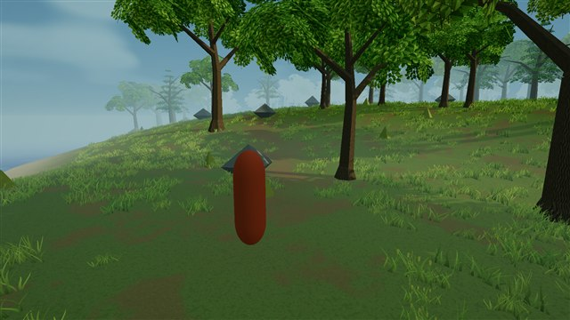
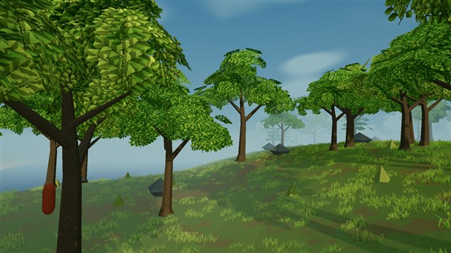
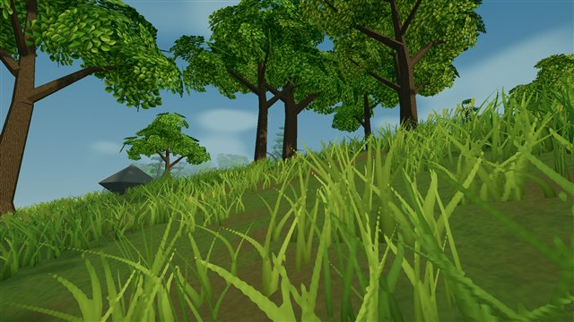

ENVIRONMENT STUDY / 01
Into the clearing.
The latest in-engine views of our survival game prototype: textured foliage, fine grass, and a misty forest edge.
Choose a view. Tap its image for the full-resolution screenshot.

01 / CLEARING
The first steps
The playable camera view through the meadow.
Open view
02 / CANOPY
Under the leaves
Leaf silhouettes, branches, and atmospheric depth.
Open view
03 / GROUND COVER
A closer look
Fine grass sprays and ground textures at a low angle.
Open view